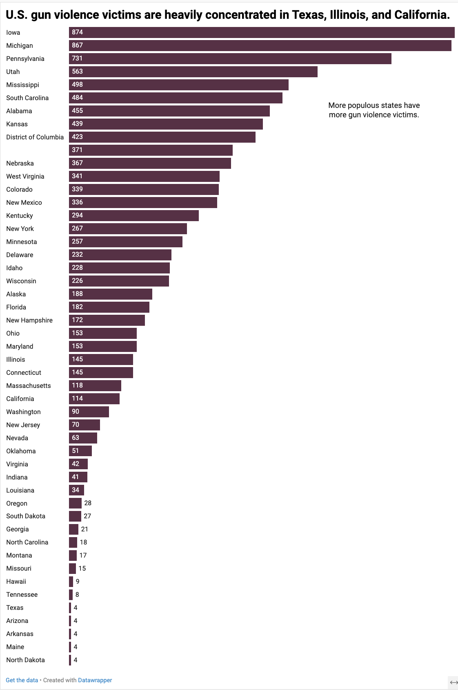
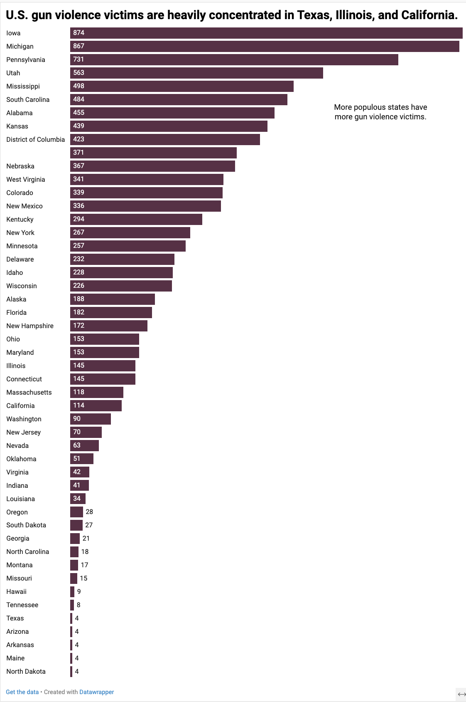

My story is focusing on gun violence vistims across America and the states that have the highest percentage of victims. I chose to do this chart because a bar chart shows most explicitly and efficiently the differences in numbers of reported gun violence victims.
 

Maybe change the scale so the box doesn't hit the end of the screen. Very newsworthy and relevant and bar chart makes the most sense in this instance. Maybe don't use 1/4 to present the number. That could be your subline. Highlighting Texas, California, and Illinois could help and make it a blood red. Add a horizontal axis label and add sources and citations. Nothing needs to be added to footnotes. I love the annotations but reiterate the most populous states or highlight the data point.
I changed 1/4 to 25% present the number and made it my subline. I Highlighted Texas, California, and Illinois and made it a blood red color. I could not add a horizontal axis label but I did add sources and citations. I also reiterated the most populous states and highlight the data points.